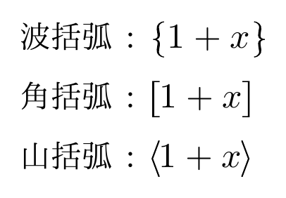
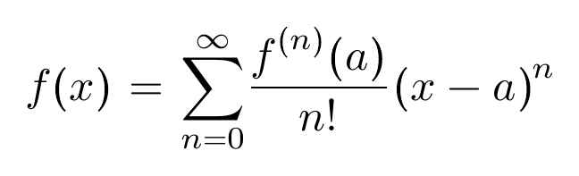

括弧
このページでは、SATySFi の数式で括弧を扱う方法について書きます。math.satyh を使っています。
式を丸括弧で囲う
\paren{ ... } を使うと、中身を丸括弧で囲うことができます。
コード例
+math (${
\paren{x + a} \paren{x + b} = x^2 + \paren{a + b} x + ab
});
コード例の組版結果 (SATySFi version 0.0.3)

括弧の大きさ
\paren{ ... } の丸括弧は中身に応じて大きさが変わります。
コード例
+math (${
\paren{1 + a} \paren{1 + a^2} \paren{1 + a^{2^2}}
});
コード例の組版結果 (SATySFi version 0.0.3)

丸括弧を直接書くとエラー
丸括弧 ( ... ) を直接 math 内に書くと構文エラーとなります。丸括弧記号は数式とプログラムの境界を示すのに使われているためです。
間違ったコード例
+math (${
% これはエラー
(x + a)(x + b) = x^2 + (a + b)x + ab
});
コード例を組版しようとしたときのエラー例 (SATySFi version 0.0.3)
! [Syntax Error at Lexer] at "must-error.saty", line 7, characters 2-3:
illegal token '(' in a math area
バックスラッシュでエスケープすることで、大きさの変わらない単なる丸括弧を書くことはできます。
コード例
+align [
[${}; ${\( 1 + a \) \( 1 + a^2 \) \( 1 + a^{2^2} \)}];
[${}; ${\paren{1 + a} \paren{1 + a^2} \paren{1 + a^{2^2}}}];
];
コード例の組版結果 (SATySFi version 0.0.3)

色々な形の括弧
丸括弧以外の括弧も用意されています。
| 名前 | コマンド |
|---|---|
波括弧 { ... } |
\brace |
角括弧 [ ... ] |
\sqbracket |
山括弧 〈 ... 〉 |
\angle-bracket |
コード例
+align [
[${\text!{波括弧}}; ${\colon-rel \brace{1 + x}}];
[${\text!{角括弧}}; ${\colon-rel \sqbracket{1 + x}}];
[${\text!{山括弧}}; ${\colon-rel \angle-bracket{1 + x}}];
];
コード例の組版結果 (SATySFi version 0.0.3)

集合
集合を表すためにはコマンド \set が使えます。縦棒によるセパレータが真ん中に入る \setsep も用意されています。
コード例
+math (
let-math \bmod = math-char MathBin `mod` in
${\set{0, 2, 4, 6, 8, \ldots}
= \setsep{n \in \mathbb{N}}{n \bmod 2 = 0}}
);
コード例の組版結果 (SATySFi version 0.0.3)

関数適用
関数を適用するときの丸括弧 f(x) を表現するためには \app が使えます。f \paren{x} と書くより構造がはっきりするので便利です。
コード例
+math (${
\app{f}{x} = \sum_{n = 0}^\infty \frac{\app{f^{\paren{n}}}{a}}{n\!} \paren{x - a}^n
});
コード例の組版結果 (SATySFi version 0.0.3)
